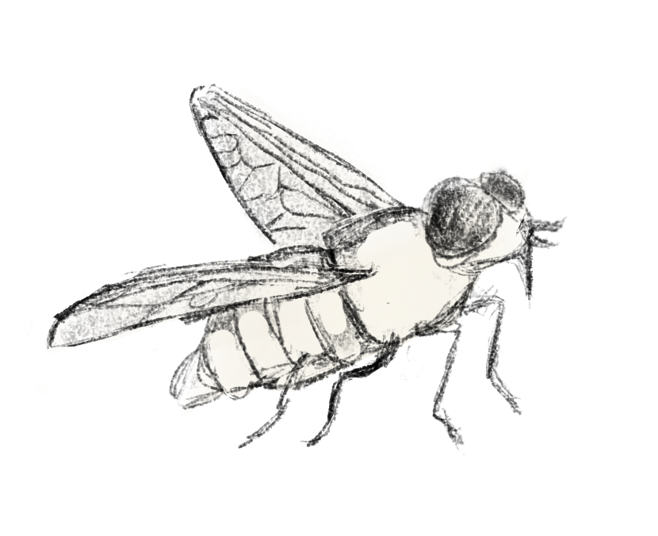

Brown-headed Cowbird (Molothrus ater)
A small bird with a brown coloured head and a black body. It is native to North America but is considered a nuisance due to it being a brood parasite.
Connections
The relationship between the brown-headed cowbird and horses is an example of mutualism, where both parties benefit from the interaction. The cowbird is an omnivore who can eat seeds as well as insects. These insects can include pests that bother horses, such as horseflies.  They can perch on and follow horses to gain better access to insects.